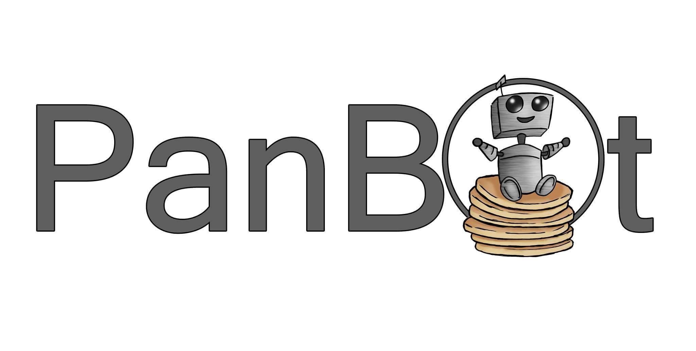
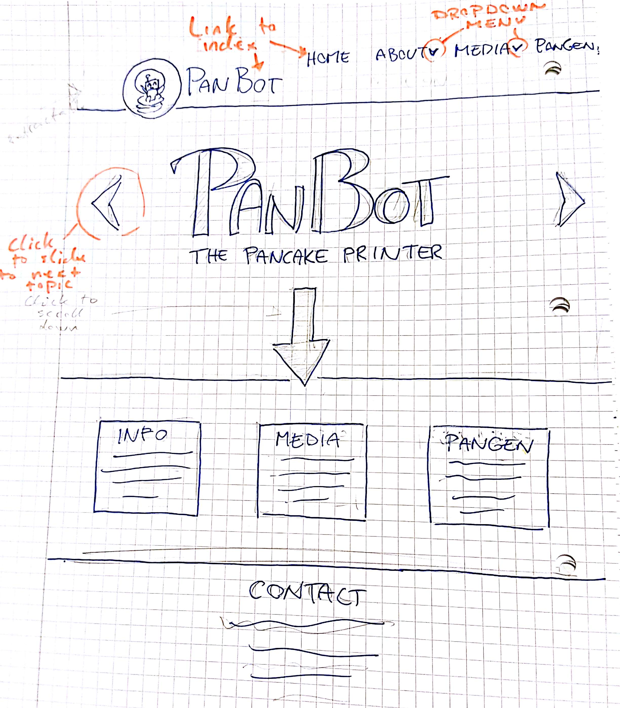
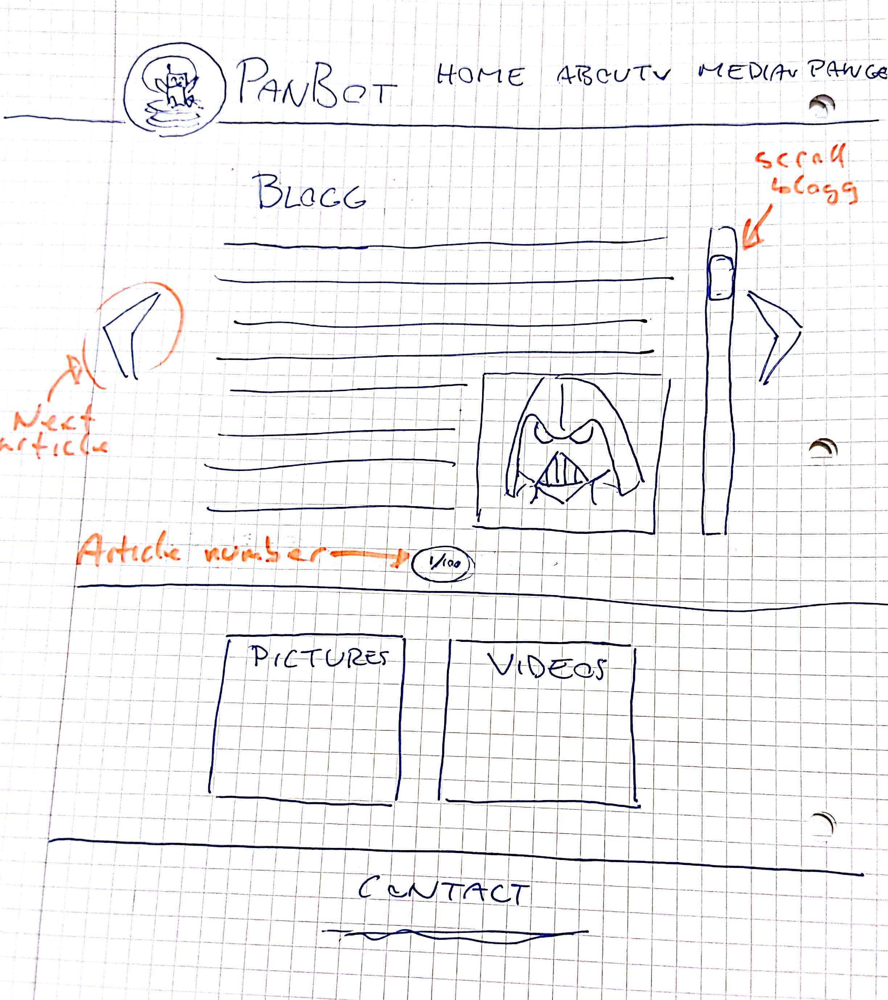
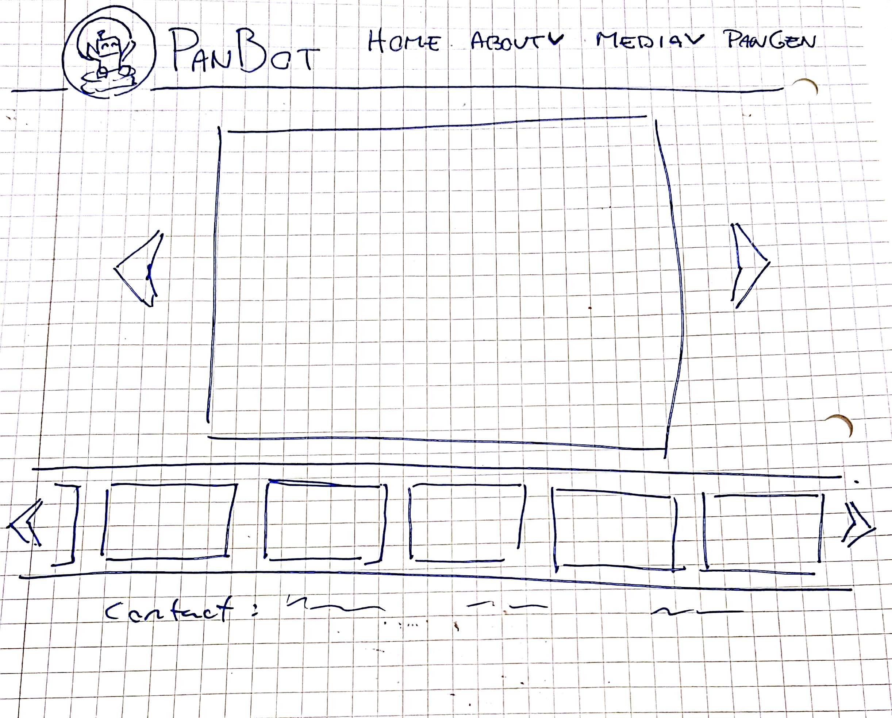

4. Page Design and Layout
Colors
Our colorscheme will be based around warm and friendly colors, reminicent of panckakes/waffles
Fonts
Our site will have a main font, as well as several backup fonts, to ensure that the user can view something else than the default font on the webiste
Link styles
Our links will have an underline style, to declare that the element is a link to the user
Logo

Our logo is made by a fellow grapical design student, and portrays a small cute robot, framed in, and sitting on top of a pile of pancakes
Header
The magical new and pretty header is quite standard actually. It is quite low, like the modern sites and goes all the way to the edge of the browser. The content is limited by a max-width and centered (in the horizontal direction) on screen, just like the content. To the left, like everyone else, we have our logo with a link to the home page. To the right we have a navigation bar with our four main categories. The bar is aligned to the bottom right of the header with some margin in all directions.
Navbar
The navigation bar consists of the four elements where two are dropdown menus. When the mouse hovers over the box element a child-element will appear that is the menu. The user can then click on the desired link and move on. This however is very little user friendly for those who use phone, but who uses phone anyway? After a long and hard discussion with the client we ended up with a mobile design with a button to get down the menu and submenus
Scaling
Our site will change it's module design according to the width of the device-screen of the user. Incorporating this will mean making a different design philosophy on the smaller devices
5. Pages
Homepage

The purpose of the home page is to inspire and show how awesome our website is. Under the header it will have a huge “jumbotron”, box, designed like a slideshow with the name “PanBot” in front and some advertising text as a subtitle. It will also have a arrow-button down to scroll to more information about the different other pages on the site.
Below the jumbotron we will have one section with three boxes side by side and probably a bit distinguished background color. These boxes will align differently when the screen is small. Each box will contain a header and a few sentences below with inviting text and a click here button. Each box will have the same dimensions and probably be 200-250px x 150-300px. (height x width)
After this section comes the footer which is described elsewhere.
Media Page(Index)

When you open the media page you will be astonished by what innovative design we have! The page is built as a blog so it can contain a lot of stories, videos or images. Our twist is that we display the different stories like a slideshow. An arrow to the right and one arrow to the left and a page number in the bottom middle so the user don’t get lost.
A blog page contains a header and maybe some pictures, videos or other content, it’s all up to the client.
Under the slideshow-blog we have a section like the home-page that contains two boxes, one for pictures and one for videos that links to Picture Gallery and Video Gallery.
Ends with the footer and starts with the header.
Blog
The blog page will contain a log of entries/updates from the project group, documenting their steady process towards their finished product. There will also be pictures as well as videos captured during the development to further elaborate. The purpose of this blog page is to reveal the whole process as the group progresses through each of the development stages, so that others who have an interest in 3-d printing or pancakes can read and learn how to do it themselves; true DIY style.

Picture Gallery
The gallery will have the standard header that accompanies the page, and just beneath it there’ll be a picture viewer that displays the first picture in the gallery. There will be buttons on either side that allows the user to navigate to the next picture in the line. Under the large picture there’ll be a stripe of several picture thumbnails in a line that’ll allow the user to easily navigate between multiple pictures faster.
There’ll be arrows on either side of the pictures that will allow the user to scroll further backwards or forwards in the galley. The pictures will first and foremost be sorted after the date the pancakes were made.
Video Gallery
This will have a very similar setup as the picture gallery, with the main difference being the fact that there are videos instead of pictures.
About us
The about pages will be boring, their purpose and goal is to be as boring as possible. They should maximize the boredom so all the other pages looks amazing! We will of course try to spice them up a bit with an image aligned to the right, a huge nice title (the same as the about pages) and some extremely pretty and boring text (also the same as everywhere else).
They might have some links and other pages or sites for a read more section if the client gets famous.
Guess what kind of footer and header we will have? Well guessed! Exactly the same!
About PanBot
Yet another boring page about our purpose and stretchgoals, all cerfuffeled together
Pangen
The pangen page will have the same header and footer as everything else and the content will be one huge centered canvas with the js application
6. Javascript funtions
Dropdown menu
Some elements in our menu will have the dropdown option. That means when the user hovers the mouse over the button we will display a child list of options placed bellow the original button.
Carousel
The carousel function will work like a slideshow. The function will load three images placed beside each other with a viewport only displaying one of them. It has options for arrows on the sides for changing images or/and automatically changing the images. When the image changes all of the images moves at the same speed in the same direction. When they have moved one image-length the image furthest away will be deleted and there will appear a new image on the other side. It will also support optional linkes when the images are clicked.
Canvas
On the pangen site we will have a drawing application we call Canvas. The canvas will display some buttons and a drawing area. The user should be able to draw lines and sircles that are saved as a lot of lines after each other in a stack. When the user is done he/she should have to option to send it as an array in a post-request to another site which handles the request or save it as an local file. It will be on the format of four numbers space-seperated for each line on each line.
Dynamic Time box
A small element that changes depending on the time of day, but that always advocates pancakes for the following meal. Feks. on 11:45 the next meal will be lunsj at 12:00 so the element might say "Soon time for lunch and do yo uknow what is the perfecct lunsj? Pancakes!"
Magnifying pictures
Some images might be displayed as a bit small so when the user clicks at it, the image or video will appear as an overlay at either original size or as big as possible for the current dimentions of the screen.